Вітальня · журнал «ДентАрт» 2014 №1 (74)
Доктор Пол Герлочі: «Найкращі матеріали і технології нічого не варті, якщо стоматолог не прагне досконалості»
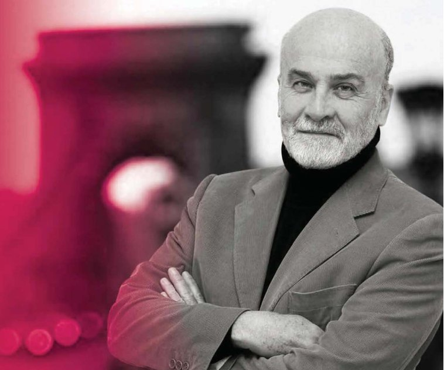
Уже два десятиліття ім'я угорського стоматолога Пола Герлочі звучить на найсерйозніших стоматологічних конгресах і наукових конференціях, присвячених проблемам естетичної, консервативної стоматології, протезування, технологіям застосування новітніх матеріалів і тих, які стали золотим стандартом реставрації. У грудні 2013 доктор Герлочі виступав на II Конгресі Української академії естетичної стоматології у Полтаві. Доцент стоматологічної школи та Університету Сегеда, засновник Угорської академії естетичної стоматології, дійсний член Британської академії естетичної стоматології та асоційований — ЄАЕС, Пол Герлочі як університетський викладач і лектор приваблює талантом просто говорити про складне, а ще — умінням свою любов до нашої нелегкої професії передавати учням...
— Шановний пане Герлочі, стоматологічна спільнота знає Вас як президента-засновника Угорської академії естетичної стоматології. Коли була заснована Академія і що цікавого, важливого було в її діяльності останнім часом?
— Наша Академія фактично розпочала своє існування як дослідницький клуб у сфері адгезивної та естетичної стоматології. Він виник на основі семінарів, які я вів наприкінці 1990-х на цю тему і де я заохочував учасників сформувати дослідницький клуб, щоб вони могли продовжити своє навчання. Коли кількість учасників зросла від кількох осіб до багатьох, ми створили Асоціацію і почали запрошувати для наших зустрічей зарубіжних лекторів, а також підключили учасників збоку. Це мало наслідком проведення спочатку одно-, а потім і дводенних щорічних конференцій. Кілька років тому ми вирішили перетворити асоціацію на академію. Різниця між ними полягає в тому, що активне членство в Академії вимагає презентації документації випадку, що є показовим для вашої роботи, а інші члени Академії оцінюють те, наскільки якість роботи і самої презентації відповідає чи не відповідає нашим високим стандартам. Торік ми проголосували за присудження активного членства двом молодим стоматологам. Тепер кількість наших активних членів зросла до 14, хоча загальна кількість членів — близько 60. Наша наступна велика конференція відбудеться навесні 2015 року. Організовуємо її разом зі стоматологічним факультетом Університету Сегеда.
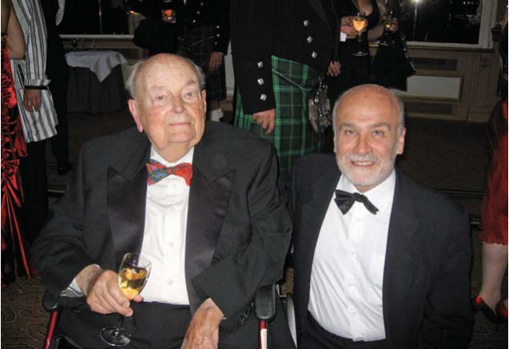
— Ви доцент Стоматологічної школи та Університету Сегеда, і кажуть, що Ваші студенти вирізняються великою активністю і прагненням до професійного вдосконалення. Як Вам вдається запалити їх таким ентузіазмом?
— Роль університету полягає в тому, щоб встановити для студентів найвищі стандарти майстерності і мотивувати їх дотримуватися такого рівня роботи і після закінчення університету.
Я вважаю, що найліпший спосіб мотивувати студентів — це самому бути мотивованим! Якщо ви відчуваєте пристрасть до вашої професії, любите працювати з пацієнтами, то це перейде і до студентів. Я також думаю, що, демонструючи досконалу роботу, можна розпалити уяву студентів і спонукати їх самих працювати чудово.
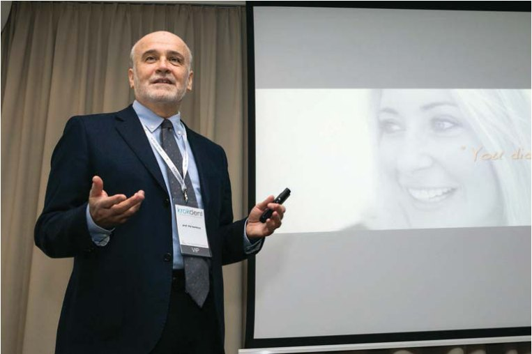
— Напевно, це питання Вам ставлять часто, однак важко втриматися, щоб його не задати. Ви працювали в США і можете порівняти сучасну європейську та американську стоматологію. Чи існують відмінності між ними сьогодні в принципових підходах до лікування стоматологічних захворювань, застосування технологій і матеріалів?
— Це складне питання, і на нього важко відповісти кількома реченнями. Оскільки я не працював активно у США протягом 20 років, у мене немає знань з перших рук про сучасні тренди в американській стоматології. Проте загалом можу сказати, що американські стоматологічні школи дають своїм студентам практичну освіту дуже високого рівня, і тому вони зазвичай можуть іти в реальний світ і практикувати вельми надійну стоматологію, що вигідно для їхніх пацієнтів. Американські стоматологи надають кваліфіковану допомогу своїм пацієнтам, і це знає кожен, хто коли-небудь лікував або обстежував ротову порожнину американця.
Я бачив, що в європейських стоматологічних школах більше акцентується теорія, ніж практика. Це означає, що коли студенти закінчують вуз, вони все ще мусять опановувати навички своєї професії, іноді навіть на шкоду пацієнтові.
Не думаю, що існує значна різниця між двома континентами в плані матеріалів і устаткування, але я справді вважаю, що американці більш схильні сприймати свою практику як бізнес і тому вони використовують техніки і матеріали саме з цією перспективою, не враховуючи того, що неодмінно благотворне для пацієнта. На жаль, я бачу, що така комерціалізація зустрічається все частіше не тільки там, але також і тут, у Європі!
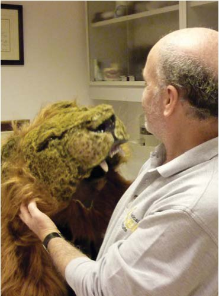
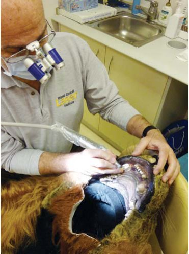
Лікування зламаного ікла в особливого пацієнта: костюм використовувався для зйомок диснеївського мультфільму «Король лев» на Будапештській кіностудії.
— На весняному семінарі ДентАрт 2013 року в Полтаві у своїй надзвичайно цікавій лекції, присвяченій мікровізуалізації з'єднання реставрації та зубних тканин, Ви говорили про недосяжний ідеал прилягання — 0 мікронів і про допустимий у відповідності з вимогами Асоціації американських стоматологів. А якого рівня Ви досягаєте у своїх реставраційних роботах?
— Ну, ми, можливо, ніколи не досягнемо досконалої інтеграції зуба та реставрації з матеріалами, які нині маємо, але ми можемо досягти прийнятного рівня. Оскільки я не дослідник, то не можу кількісно оцінити рівень прилягання використовуваного матеріалу. Однак я можу побачити результати! Інакше кажучи, відсутність запалення навколо субгінгівальних країв і відсутність вторинного карієсу свідчать про те, що краї запечатані адекватно. До того ж, я використовую бінокуляри з великим збільшенням (5х) і мікроскоп (до 25х), щоб перевіряти краї реставрації.
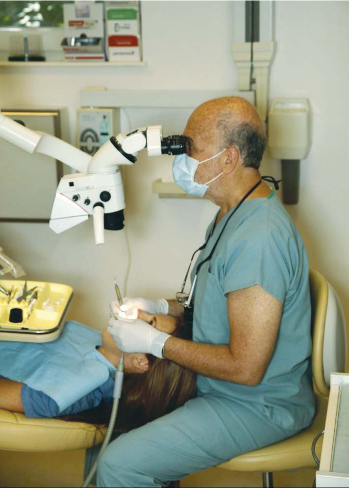
— Яким був Ваш шлях у стоматологію? Чому обрали цю професію?
— Мій батько був дуже відомим у Будапешті стоматологом, і це безпосередньо вплинуло на моє бажання оволодіти цією професією. У мене були умілі руки (хоча і дві лівих ноги, а тому я поганий танцюрист!), і з юних літ мені подобалося майструвати речі, наприклад збирати моделі автомобілів і літаків. Також у мене було терпіння, щоб працювати багато годин над цими проектами. Пізніше мене привабило творення мистецьких речей, і найбільше подобалося мати справу з тривимірними витворами скульптури і кераміки. До того як вступити до стоматологічної школи, я справді протягом року забезпечував себе за рахунок того, що виготовляв і продавав свої керамічні вироби.
Коли розмовляю з молодими людьми, котрі подумують про те, щоб обрати стоматологію своєю професією, я завжди запитую, чи подобається їм робити що-небудь своїми руками, і, як правило, раджу подумати тим, кому не подобається. Хоча базових навичок, які вимагаються для стоматологічної роботи, можна навчити майже кожного, я гадаю, це важливо, щоб стоматолог мав деякі вроджені здібності і щоб йому/їй подобалося працювати своїми руками, інакше його/її очікують розчарування протягом усієї кар'єри.
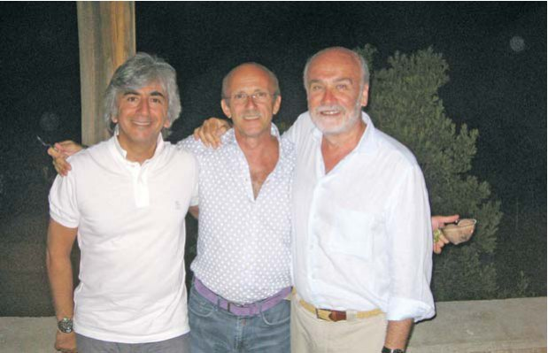
— У чому, на Вашу думку, секрет успіху стоматолога? Чому одні стають відомими лекторами, талановитими викладачами, гарними клініцистами, а інші відбувають день до вечора?
— Успіх у нашій професії вимірюється кількома речами. Наприклад, багато людей вважають, що гроші є мірилом успіху. Однак більшість із нас знає, що багато зароблених грошей необов'язково відповідає добре зробленій роботі і високому рівню особистого задоволення. Я гадаю, найважливішим є те, що стоматолог (чи хтось інший) відчуває пристрасть до тієї роботи, яку він робить! Саме це забезпечує той рівень досконалості, якого неможливо досягти, якщо думати про свою професію як про спосіб заробляти гроші. Це стосується будь-якої професії чи роботи! Ми витрачаємо на роботу більшу частину нашого свідомого життя, і було б соромно присвятити її професії, яка не приносить нам задоволення!
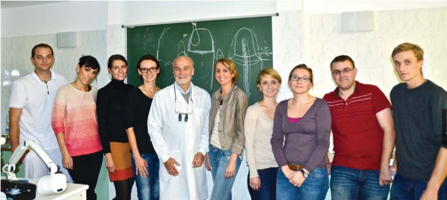
— У своїй лекції в Полтаві Ви зазначили: «Кожна дрібниця має значення». Про які «дрібниці» найчастіше забувають стоматологи?
— Стоматологія — це покроковий процес, де навіть незначні помилки, зроблені на одному або кількох етапах, можуть мати тривалі руйнівні наслідки для реставрації. Усі ми йдемо навпростець з фінансових міркувань і щоб заощадити час. Це факт життя! Виклик полягає в тому, щоб виконувати кожен етап процесу реставрації на найвищому рівні і звертати увагу на крихітні деталі для того, щоб шанси на успіх були максимальними. Враховуючи сучасний економічний клімат, який більшість з нас відчуває на собі, це важке завдання. Але все ж головне — прагнути бути чудовими клініцистами.
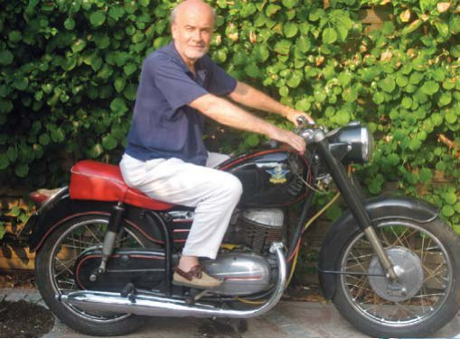
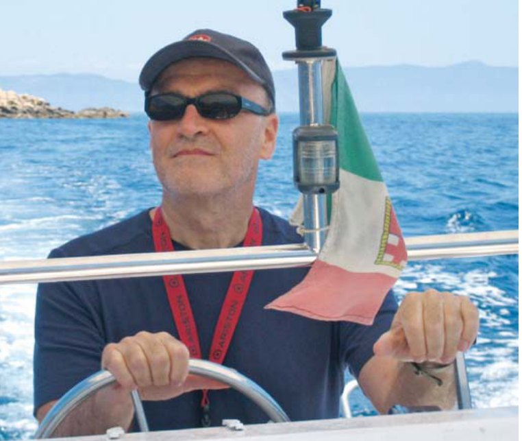
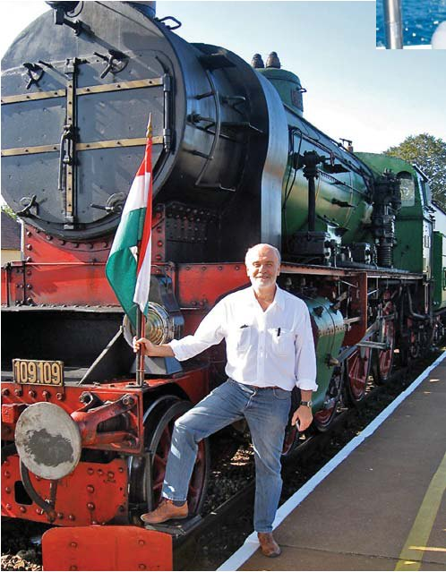
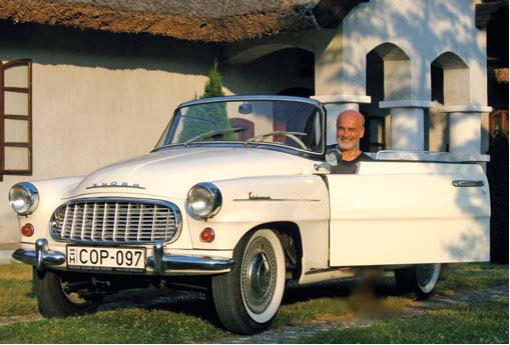
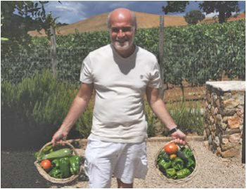
— І це питання Вам, напевно, доводилося чути. Ви дуже схожі на Джона Малковича, чи не хотілося Вам «бути Джоном Малковичем» — не в сенсі колізій відомого фільму, а просто — актором? Чи цю потребу бути актором цілком можна задовольнити за університетською кафедрою?
— Правду кажучи, останнє, ким я хотів бути, так це актором! У школі я завжди соромився, коли потрібно було, стоячи перед усім класом, декламувати щось напам'ять або виступати з промовою! Я справді здивований тим, що саме цим займаюся досить часто, та ще й двома мовами, тому що не відчуваю це як своє. Однак я час від часу справді підштовхую себе до того, щоб випробувати щось нове або складне, бо мені здається, що це єдиний шлях до професійного та особистісного зростання. Спочатку це може викликати стрес чи фрустрацію і навіть призвести до невдачі. Незважаючи на це, я все ж вважаю, що нам іноді варто підштовхувати себе за кордони нашої зони комфорту.
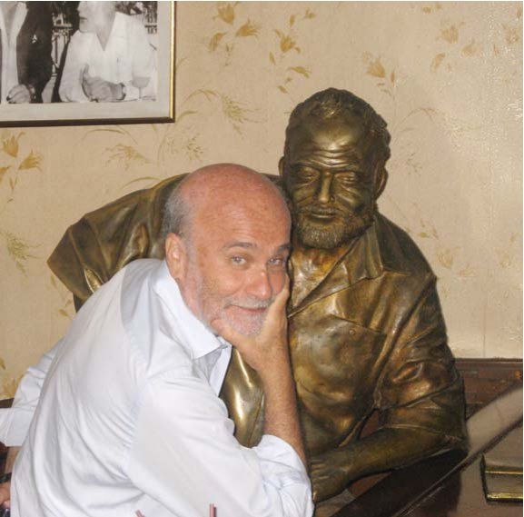
— Ваш життєвий девіз? Ваше хобі?
— По суті, у мене немає життєвого девізу, але якби можна було вибрати який-небудь, то, гадаю, це був би девіз «Чини правильно!» У будь-якій ситуації, яку підносить життя, мені здається, у кожного з нас є моральний компас, що підказує, який вчинок буде «правильним», але внаслідок власного его ми іноді приймаємо рішення, що служить йому одному. Це стосується не лише особистих рішень, але також і нашого професійного вибору при лікуванні пацієнтів. Звичайно ж, я не завжди роблю правильний вибір, але кожного разу, коли це стається, глибоко в душі я знаю, що рішення було прийняте без урахування інтересів інших!
Що ж до хобі, то колись я створював кераміку, як уже згадував раніше, а також інші художні речі, але потім у мене не залишилося часу на це. Так що тепер я міг би сказати, що моїм хобі є стоматологія, особливо коли подивитися на мій заробіток і його залежність від кількості часу, що його я затратив!
— Ваші побажання читачам журналу «ДентАрт», а це стоматологи з 13 країн Європи та Азії.
— Для нашої професії настали вельми захопливі, але й нелегкі часи. З'являються технологічні вдосконалення, які протягом кількох наступних років повністю трансформують те, як ми практикуємо стоматологію. Однак я вважаю, що навіть у такий період, як тепер, важливо не забувати основи нашої професії і враховувати перспективу. Гарні клінічні навички, критичне мислення і увага до деталей завжди забезпечать тривалий успіх. До того ж, ми повинні використовувати технології з етичної точки зору, тобто з вигодою для пацієнта, а не для себе.
Завдяки сучасному вільному потоку інформації та людей читачі вашого журналу мають великі можливості вивчати найкраще у світі, і я хотів би, щоб вони користувалися цією перевагою. У цьому контексті хочу схвально відгукнутися про пана Радлінського і відзначити ті величезні зусилля, які він витратив для того, щоб забезпечити освітніми можливостями своїх колег-професіоналів. Упевнений у тому, що його енергія і прагнення до досконалості змінили ставлення багатьох стоматологів в Україні до професії і підняли рівень їхніх навичок.
Також висловлюю вдячність і повагу за те, що запросили мене прочитати лекцію у вашій великій країні.
Розмовляла Ксенія Лазарєва.
Фото і підписи до них — Пола Герлочі.